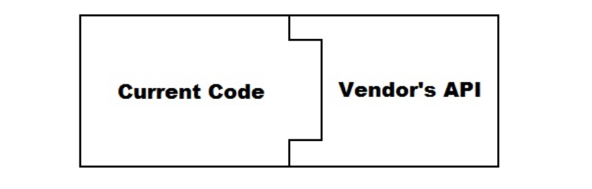
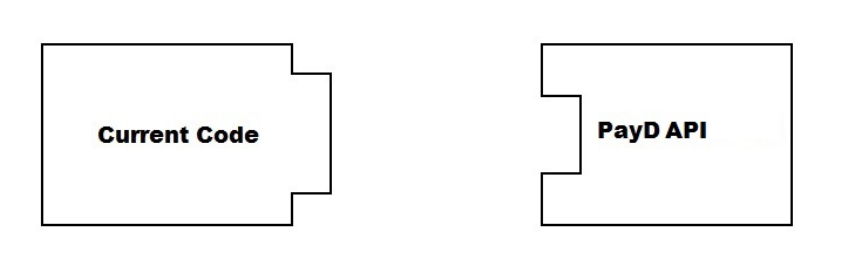
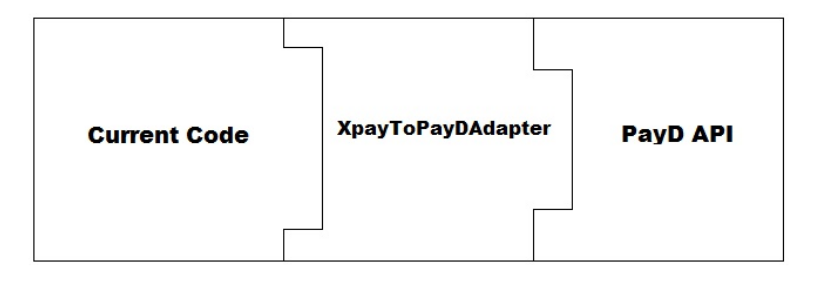
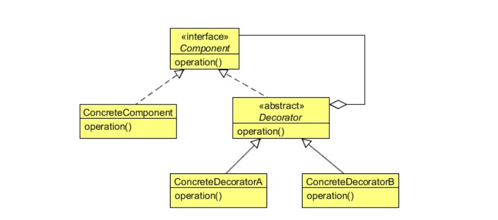
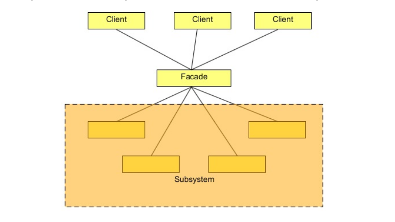
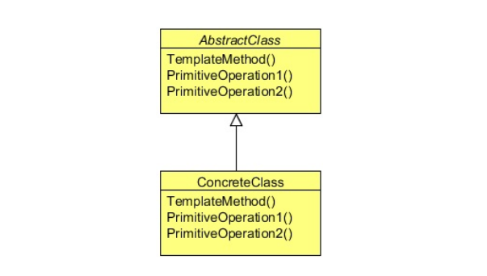
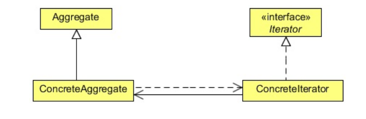

本系列主要介绍了常用的面向复用的设计模式，包括创建型模式 （Creational Patterns）、结构型模式 （Structural Patterns）和行为型模式 （Behavioral Patterns）。
23 个经典设计模式
一些工厂模式，帮助简化对象创建过程。
利用现有类和对象组成更大的数据结构。比如将两个或更多的类进行集成产生更复杂的类，同时还有可能增加新的功能。
问题描述：
假设你有一个在线交易网站，运行的是第三方支付网关 Xpay（这里体现为通过 Xpay 的实例记录一个用户的所有信息）。现在供应商只允许你使用新的支付网关（更加安全可靠） PayD，但是原有的代码都是使用 Xpay 的，与 PayD 不兼容。


解决方案：
你在原有代码和 PayD 之间加了一个适配器（Apapter），这样既保证了使用新的支付网关，有保证了原有的代码还能够运行。

代码：
原有的 Xpay 接口。
Xpay.java
package com.javacodegeeks.patterns.adapterpattern.xpay;public interface Xpay public String getCreditCardNo () public String getCustomerName () public String getCardExpMonth () public String getCardExpYear () public Short getCardCVVNo () public Double getAmount () public void setCreditCardNo (String creditCardNo) public void setCustomerName (String customerName) public void setCardExpMonth (String cardExpMonth) public void setCardExpYear (String cardExpYear) public void setCardCVVNo (Short cardCVVNo) public void setAmount (Double amount) }
原有 Xpay 接口的实现。
XpayImpl.java
package com.javacodegeeks.patterns.adapterpattern.site;import com.javacodegeeks.patterns.adapterpattern.xpay.Xpay;public class XpayImpl implements Xpay private String creditCardNo; private String customerName; private String cardExpMonth; private String cardExpYear; private Short cardCVVNo; private Double amount; @Override public String getCreditCardNo () return creditCardNo; } @Override public String getCustomerName () return customerName; } @Override public String getCardExpMonth () return cardExpMonth; } @Override public String getCardExpYear () return cardExpYear; } @Override public Short getCardCVVNo () return cardCVVNo; } @Override public Double getAmount () return amount; } @Override public void setCreditCardNo (String creditCardNo) this .creditCardNo = creditCardNo; } @Override public void setCustomerName (String customerName) this .customerName = customerName; } @Override public void setCardExpMonth (String cardExpMonth) this .cardExpMonth = cardExpMonth; } @Override public void setCardExpYear (String cardExpYear) this .cardExpYear = cardExpYear; } @Override public void setCardCVVNo (Short cardCVVNo) this .cardCVVNo = cardCVVNo; } @Override public void setAmount (Double amount) this .amount = amount; } }
新来的 PayD 接口。
PayD.java
package com.javacodegeeks.patterns.adapterpattern.payd;public interface PayD public String getCustCardNo () public String getCardOwnerName () public String getCardExpMonthDate () public Integer getCVVNo () public Double getTotalAmount () public void setCustCardNo (String custCardNo) public void setCardOwnerName (String cardOwnerName) public void setCardExpMonthDate (String cardExpMonthDate) public void setCVVNo (Integer cVVNo) public void setTotalAmount (Double totalAmount) }
细心观察可以发现，这儿 PayD 的功能基本和 Xpay 一样。
getCustCardNo == getCreditCardNo
getCardOwnerName == getCustomerName
getCardExpMonthDate == getCardExpMonth + getCardExpYear
getCVVNo == getCardCVVNo （返回值类型有差别）
getTotalAmount == getAmount
为了让原有的代码使用 PayD 做支付网关，必须要在 Xpay 基础上封装出一个适配器 XpayToPayDAdapter，这个适配器实现了 PayD ，在内部有 Xpay 作为变量。在内使用 Xpay，在外表现为 PayD。
XpayToPayDAdapter.java
package com.javacodegeeks.patterns.adapterpattern.site;import com.javacodegeeks.patterns.adapterpattern.payd.PayD;import com.javacodegeeks.patterns.adapterpattern.xpay.Xpay;public class XpayToPayDAdapter implements PayD private String custCardNo; private String cardOwnerName; private String cardExpMonthDate; private Integer cVVNo; private Double totalAmount; private final Xpay xpay; public XpayToPayDAdapter (Xpay xpay) this .xpay = xpay; setProp(); } @Override public String getCustCardNo () return custCardNo; } @Override public String getCardOwnerName () return cardOwnerName; } @Override public String getCardExpMonthDate () return cardExpMonthDate; } @Override public Integer getCVVNo () return cVVNo; } @Override public Double getTotalAmount () return totalAmount; } @Override public void setCustCardNo (String custCardNo) this .custCardNo = custCardNo; } @Override public void setCardOwnerName (String cardOwnerName) this .cardOwnerName = cardOwnerName; } @Override public void setCardExpMonthDate (String cardExpMonthDate) this .cardExpMonthDate = cardExpMonthDate; } @Override public void setCVVNo (Integer cVVNo) this .cVVNo = cVVNo; } @Override public void setTotalAmount (Double totalAmount) this .totalAmount = totalAmount; } private void setProp () setCardOwnerName(this .xpay.getCustomerName()); setCustCardNo(this .xpay.getCreditCardNo()); setCardExpMonthDate(this .xpay.getCardExpMonth()+"/" +this .xpay.getCardExpYear()); setCVVNo(this .xpay.getCardCVVNo().intValue()); setTotalAmount(this .xpay.getAmount()); } }
在客户端使用的时候利用旧的 Xpay 产生新的 PayD，之后所有操作通过 PayD 进行。
Xpay xpay = new XpayImpl(); xpay.setCreditCardNo("4789565874102365" ); xpay.setCustomerName("Max Warner" ); xpay.setCardExpMonth("09" ); xpay.setCardExpYear("25" ); xpay.setCardCVVNo((short )235 ); xpay.setAmount(2565.23 ); PayD payD = new XpayToPayDAdapter(xpay); System.out.println(payD.getCardOwnerName()); System.out.println(payD.getCustCardNo()); System.out.println(payD.getCardExpMonthDate()); System.out.println(payD.getCVVNo()); System.out.println(payD.getTotalAmount());
总结：
当想使用一种新的接口，却发现和旧的代码不兼容时，可以加一个适配器来让旧的代码仍起作用。
XpayToPayDAdapter 内部有一个 Xpay 的实例，是 Delegation 中的 Aggregation 。
装饰器内部有一个变量，在这个变量基础上增加一些其他功能，类似于锦上添花，称之为“装饰”。这样的模式非常简洁易懂，客户端需要某种功能，只需调用相应的装饰者。
UML 类图：

在上图中，抽象类 Decorator 有两条到 Component 的连线，左边一条表示 Decorator 实现了 Component，右边一条表示 Decorator 内部含有 Component 型的变量，这是一种 Aggregation 。
代码：
首先有一个接口。
Pizza.java
package com.javacodegeeks.patterns.decoratorpattern;public interface Pizza public String getDesc () public double getPrice () }
这个接口被抽象的装饰器实现。
PizzaDecorator.java
package com.javacodegeeks.patterns.decoratorpattern;public abstract class PizzaDecorator implements Pizza @Override public String getDesc () return "Toppings" ; } }
又有一个具体的类来继承实现这个装饰器的抽象方法。
Chicken.java
package com.javacodegeeks.patterns.decoratorpattern;public class Chicken extends PizzaDecorator private final Pizza pizza; public Chicken (Pizza pizza) this .pizza = pizza; } @Override public String getDesc () return pizza.getDesc()+", Chicken (12.75)" ; } @Override public double getPrice () return pizza.getPrice()+12.75 ; } }
可以看到这个实现是在原来的基础增加了更多的功能（这里是以输出表现）。
而普通的未经过装饰的实现是这样的。
SimplyVegPizza.java
package com.javacodegeeks.patterns.decoratorpattern;public class SimplyVegPizza implements Pizza @Override public String getDesc () return "SimplyVegPizza (230)" ; } @Override public double getPrice () return 230 ; } }
客户端可以通过层层装饰来获得新功能。
pizza = new SimplyNonVegPizza(); pizza = new Meat(pizza); pizza = new Cheese(pizza); pizza = new Cheese(pizza); pizza = new Ham(pizza); System.out.println("Desc: " +pizza.getDesc()); System.out.println("Price: " +dformat.format(pizza.getPrice()));
恭喜你到此得到了一份有 meat、cheese（两个哦）、ham 的 pizza😃 ，不过你也得付更多的钱。
总结：
装饰器模式同样利用了 Delegation 中的 Aggregation ，这与适配器模式非常相似，不过它是为了增加新的功能而不是适配客户端与 API。对于 Delegation 和继承两种方式的优缺点的探讨也很简单，多数围绕着动态、静态，灵活性方面。这里 Delegation 的作用无疑发挥到了极致。
对于一个复杂的系统，有很多小接口，将需要利用很多小操作实现的一个复杂操作封装成外观供客户端直接调用，简化了操作，但并不提供原有系统的全部功能。
同时还有解耦的作用，要改动调用时，客户端调用操作不必修改，只需修改外观。
UML 类图：

代码：
一个复杂的系统有很多小操作。
ScheduleServer.java
package com.javacodegeeks.patterns.facadepattern;public class ScheduleServer public void startBooting () System.out.println("Starts booting..." ); } public void readSystemConfigFile () System.out.println("Reading system config files..." ); } public void init () System.out.println("Initializing..." ); } public void initializeContext () System.out.println("Initializing context..." ); } public void initializeListeners () System.out.println("Initializing listeners..." ); } public void createSystemObjects () System.out.println("Creating system objects..." ); } public void releaseProcesses () System.out.println("Releasing processes..." ); } public void destory () System.out.println("Destorying..." ); } public void destroySystemObjects () System.out.println("Destroying system objects..." ); } public void destoryListeners () System.out.println("Destroying listeners..." ); } public void destoryContext () System.out.println("Destroying context..." ); } public void shutdown () System.out.println("Shutting down..." ); } }
可是我们只需要开机、关机，希望简化一下，就得到了我们的外观。
ScheduleServerFacade.java
package com.javacodegeeks.patterns.facadepattern;public class ScheduleServerFacade private final ScheduleServer scheduleServer; public ScheduleServerFacade (ScheduleServer scheduleServer) this .scheduleServer = scheduleServer; } public void startServer () scheduleServer.startBooting(); scheduleServer.readSystemConfigFile(); scheduleServer.init(); scheduleServer.initializeContext(); scheduleServer.initializeListeners(); scheduleServer.createSystemObjects(); } public void stopServer () scheduleServer.releaseProcesses(); scheduleServer.destory(); scheduleServer.destroySystemObjects(); scheduleServer.destoryListeners(); scheduleServer.destoryContext(); scheduleServer.shutdown(); } }
与算法 有关，与对象之间的任务分配相关。这种模式同时表示了类和对象之间的一种联系，能够让你在运行时做一些决策，避免了很多头疼的问题。
**问题描述：**对同一项任务，可能会有不同的实现方式，客户端可以根据需要在运行时动态选择地合适的方式。
例子：
排序算法 有冒泡排序 、归并排序 、快速排序 等等。支付方式 有现金支付 、银行卡支付 、微信支付 等等。ListArrayListLinkedListCopyOnWriteArrayList
解决方案 ：创建一个 Interface，在这个 Interface 的每个实现中使用不同的算法。
优点 ：
UML 类图 ：
代码：
定义支付策略接口。
PaymentStrategy.java
package strategy;public interface PaymentStrategy public void pay (double amount) }
具体的实现方式有两种。
PaypalStrategy
package strategy;public class PaypalStrategy implements PaymentStrategy private String emailId; private String password; public PaypalStrategy (String email, String pwd) emailId = email; password = pwd; } @Override public void pay (double amount) System.out.println("Email: " + emailId); System.out.println("Password: " + password); System.out.println(amount + "paid using Paypal" ); } }
CreditCardStrategy.java
package strategy;public class CreditCardStrategy implements PaymentStrategy private String name; private String cardNumber; private String cvv; private String dateOfExpiry; public CreditCardStrategy (String name, String cardNumber, String cvv, String dateOfExpiry) this .name = name; this .cardNumber = cardNumber; this .cvv = cvv; this .dateOfExpiry = dateOfExpiry; } @Override public void pay (double amount) System.out.println("Name: " + name); System.out.println("Card Number: " + cardNumber); System.out.println("CVV: " + cvv); System.out.println("Date of expiry: " + dateOfExpiry); System.out.println(amount + "paid with credit card" ); } }
在其他地方使用，根据传入的策略参数进行支付。
ShoppingCart.java
package strategy;public class ShoppingCart double total = 0 ; public void addGoods (double amount) total += amount; } public void pay (PaymentStrategy paymentStrategy) paymentStrategy.pay(total); } }
做事情的步骤一样,但具体方法不同。
给一类算法定一套模板，你之后的实现应该能够包含一些固定的操作，但是又有一些灵活度。
UML 类图：

抽象类 AbstractClass 有一些关于某个算法的原始操作，在子类 ConcreteClass 中可以具体的实现这些操作。在 TemplateMethod 中调用这些原始操作。
代码：
首先定义一个连接模板，里面的 run()（即 TemplateMethod） 已经定义，调用一些其他方法（即 PrimitiveOperation），其中包括一些抽象方法，在不同的连接情况下，这些抽象方法的实现有所不同（比如 setDBDriver）
ConnectionTemplate.java
package com.javacodegeeks.patterns.templatepattern;import java.util.Date;public abstract class ConnectionTemplate private boolean isLoggingEnable = true ; public ConnectionTemplate () isLoggingEnable = disableLogging(); } public final void run () setDBDriver(); logging("Drivers set [" +new Date()+"]" ); setCredentials(); logging("Credentails set [" +new Date()+"]" ); connect(); logging("Conencted" ); prepareStatement(); logging("Statement prepared [" +new Date()+"]" ); setData(); logging("Data set [" +new Date()+"]" ); insert(); logging("Inserted [" +new Date()+"]" ); close(); logging("Conenctions closed [" +new Date()+"]" ); destroy(); logging("Object destoryed [" +new Date()+"]" ); } public abstract void setDBDriver () public abstract void setCredentials () public void connect () System.out.println("Setting connection..." ); } public void prepareStatement () System.out.println("Preparing insert statement..." ); } public abstract void setData () public void insert () System.out.println("Inserting data..." ); } public void close () System.out.println("Closing connections..." ); } public void destroy () System.out.println("Destroying connection objects..." ); } public boolean disableLogging () return true ; } private void logging (String msg) if (isLoggingEnable){ System.out.println("Logging....: " +msg); } } }
继承抽象模板，完成抽象方法的实现。下面是 MySql 的例子。
MySqLCSVCon.java
package com.javacodegeeks.patterns.templatepattern;public class MySqLCSVCon extends ConnectionTemplate @Override public void setDBDriver () System.out.println("Setting MySQL DB drivers..." ); } @Override public void setCredentials () System.out.println("Setting credentials for MySQL DB..." ); } @Override public void setData () System.out.println("Setting up data from csv file...." ); } @Override public boolean disableLogging () return false ; } }
总结：
模板留出抽象方法待子类实现。这种策略在 Junit 测试文件中也经常用到。比如在上面的例子中我可以写一个抽象测试类 ConnectionTemplateTest，然后用 MySqLCSVConTest 继承这个类来测试 MySqLCSVCon，可以节省很多代码。
看到抽象类中某方法调用未实现的抽象方法，就会主动去想到这种实现方式是模板模式。
让数据结构具有迭代功能。

Java 自带 Iterator 接口，用自己的 ConcreteIterator 实现这个接口，同时在内部 aggregate 一些 ConcreteAggregate。
比如 ShapeIterator 就会在内部拥有 Shape 变量数组。
代码：
一个简单而又朴素的形状。
Shape.java
package com.javacodegeeks.patterns.iteratorpattern;public class Shape private int id; private String name; public Shape (int id, String name) this .id = id; this .name = name; } public int getId () return id; } public void setId (int id) this .id = id; } public String getName () return name; } public void setName (String name) this .name = name; } @Override public String toString () return "ID: " +id+" Shape: " +name; } }
为了遍历一个 Shape 数组，要实现 Iterator<Shape>，在内部 aggregate 一些 Shapes 用于操作。
ShapeIterator.java
package com.javacodegeeks.patterns.iteratorpattern;import java.util.Iterator;public class ShapeIterator implements Iterator <Shape > private Shape [] shapes; int pos; public ShapeIterator (Shape []shapes) this .shapes = shapes; } @Override public boolean hasNext () if (pos >= shapes.length || shapes[pos] == null ) return false ; return true ; } @Override public Shape next () return shapes[pos++]; } @Override public void remove () if (pos <=0 ) throw new IllegalStateException("Illegal position" ); if (shapes[pos-1 ] !=null ){ for (int i= pos-1 ; i<(shapes.length-1 );i++){ shapes[i] = shapes[i+1 ]; } shapes[shapes.length-1 ] = null ; } } }
对于客户端来说，用起来非常简洁，三个方法轮番调用。
TestIteratorPattern.java
package com.javacodegeeks.patterns.iteratorpattern;public class TestIteratorPattern public static void main (String[] args) ShapeStorage storage = new ShapeStorage(); storage.addShape("Polygon" ); storage.addShape("Hexagon" ); storage.addShape("Circle" ); storage.addShape("Rectangle" ); storage.addShape("Square" ); ShapeIterator iterator = new ShapeIterator(storage.getShapes()); while (iterator.hasNext()){ System.out.println(iterator.next()); } System.out.println("Apply removing while iterating..." ); iterator = new ShapeIterator(storage.getShapes()); while (iterator.hasNext()){ System.out.println(iterator.next()); iterator.remove(); } } }
ShapeStorage.java
package com.javacodegeeks.patterns.iteratorpattern;public class ShapeStorage private Shape []shapes = new Shape[5 ]; private int index; public void addShape (String name) int i = index++; shapes[i] = new Shape(i,name); } public Shape[] getShapes(){ return shapes; } }
创建型模式
结构型模式
行为型模式
适配器模式
策略模式
装饰器模式
模板模式
外观模式
迭代器模式
Java Design Patterns Software Construction at HIT | 5.3 Design Patterns for Reuse
设计模式Java版